Fifty Robots Find Each Other in the Dark
Underwater, almost every sensor a robot relies on stops working. No GPS. No useful vision. Radio doesn't propagate. What's left is short-range ranging and dead reckoning — and the question of whether a fleet can still stay together on that alone. This project builds the answer in three layers: a 6-DoF AUV dynamics model with real thruster and hydrodynamic behavior, a LiDAR-only tracking and obstacle-avoidance controller navigating a maze, and a 50-agent flocking simulation where robots scattered at random converge into a coherent group using nothing but range and bearing to whoever happens to be in view.
A lighthouse, and everyone else following the light.
The coordination problem is framed around a "lighthouse": one vehicle in the fleet carries the full AUV dynamics and moves through the environment as ground truth, publishing 2D positions to a tracking model. Every other robot has no idea where it is in any global sense — it only knows what its LiDAR currently sees. If the lighthouse falls inside a robot's sensing cone and range, that robot follows. If not, it searches.
That asymmetry is a deliberate simplification with a real justification: modeling full hydrodynamics for every agent is expensive, and the environmental forces that matter most are the ones acting on the vehicle whose trajectory everyone else is keyed to. Environment effects were applied to the lighthouse and omitted for the followers — which the report is explicit about as a limitation rather than a design choice.
The workspace is a bounded maze, walls acting as obstacles. Unbounded would be more realistic; bounded makes obstacle avoidance, tracking, and flocking observable in the same scene.
Motor curves, drag, buoyancy — modeled, not assumed.
The AUV is a 10 kg vehicle with five thrusters: two T200s for surge, two T100s for lateral motion, and one T200 for heave. Rather than treating thrust as an ideal command, the motors were characterized from first principles — the electrical equation with back-EMF and the mechanical torque balance — and their transfer functions derived in MATLAB, so commanded voltage maps to actual angular velocity with the right dynamics in between.
mechanical: Tm(s) = Jsω(s) + Bω(s) + TL(s), Tm = KtIa(s)
rigid body: τ = M(q)q̈ + C(q,q̇)q̇ + D(q,q̇) + G(q) // inertia, Coriolis, hydrodynamic, buoyancy
A PID translation controller tracks waypoints from a reference generator, its output passing through a dead zone (−0.5 to +0.5) before conversion to PWM — so small errors don't produce thruster chatter. Drag and lift are computed from velocity components resolved into body axes, combined with propulsion forces into a total wrench, and fed to a 6-DoF body-to-Euler block that returns position, orientation, rates, and accelerations. Post-processing extracts angle of attack, side-slip, and IMU data — the signals a real vehicle would actually have to navigate on.
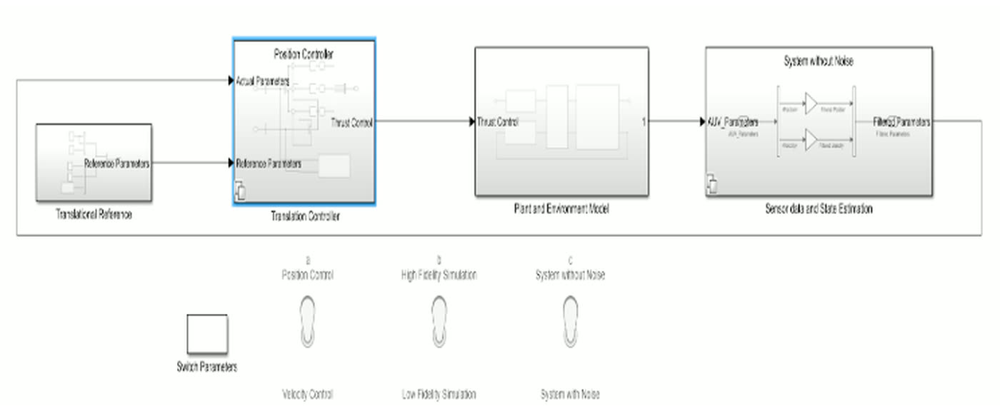
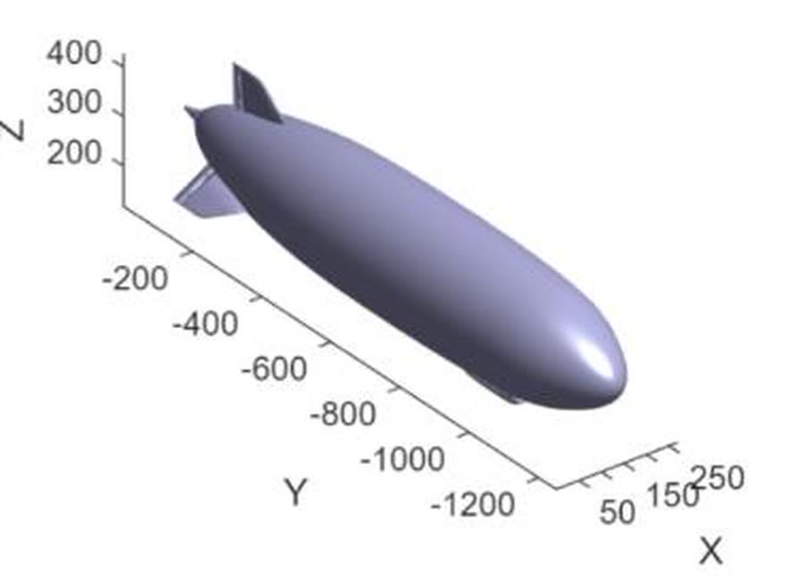
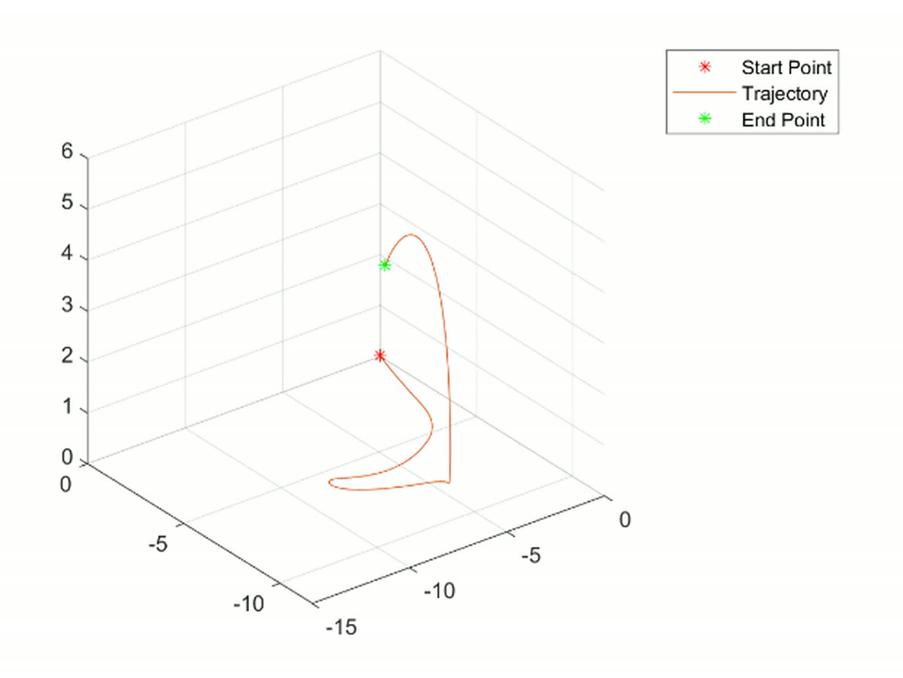
Range, bearing, field of view, and nothing else.
The detector model is deliberately austere, because austerity is the point. A sensor sits at an offset from the robot body, so its world pose accounts for that offset rotated into the body frame. For each object it computes Euclidean range and a bearing wrapped to [−π, π], discards anything outside the 90° field of view or beyond max range, sorts what survives by distance, and returns only the nearest few.
ri = ‖pi − psensor‖, φi = wrapToPi( atan2(Δy, Δx) − θsensor )
keep if |φi| ≤ FoV/2 and ri ≤ rmax, then sort by r and cap at maxDetections
That last step — capping the number of detections — is the one that makes this scale. A robot never reasons about 49 neighbors; it reasons about the handful closest to it, which is both what a real sensor delivers and what keeps the controller's cost independent of fleet size.
If you can't see it, turn until you can.
The follower behavior is a small state machine driven entirely by what the LiDAR returns. Instantaneous bearings are compared against the sensor's angular window and range gate. When the average detection angle goes negative — the lighthouse is not in front — the robot rotates in place to reacquire rather than wandering. Once the target is in view it drives toward it at constant velocity, and the tracking law then holds a set standoff distance from both the lighthouse and the other followers, which is what stops a following behavior from collapsing into a pile-up.
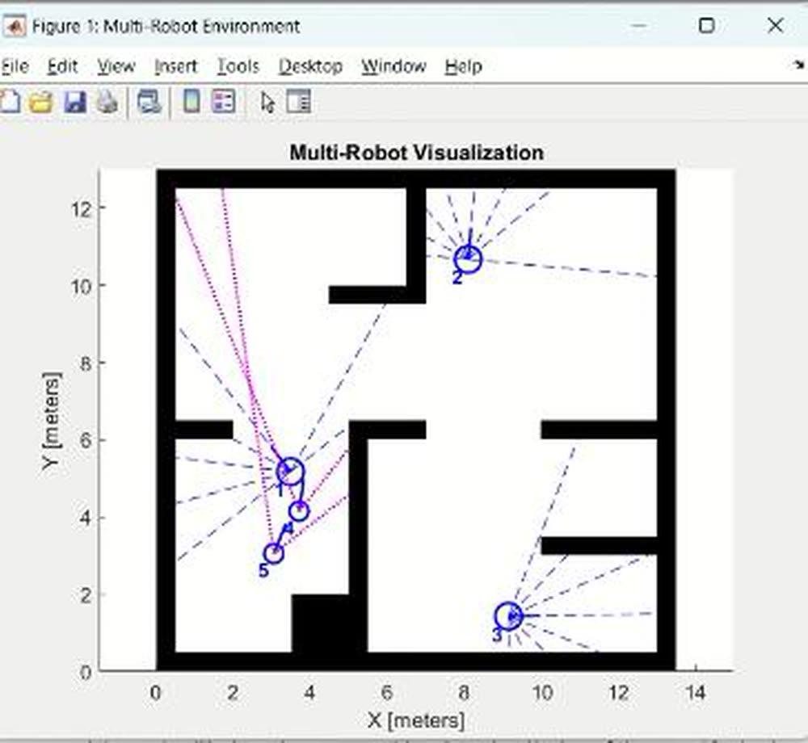
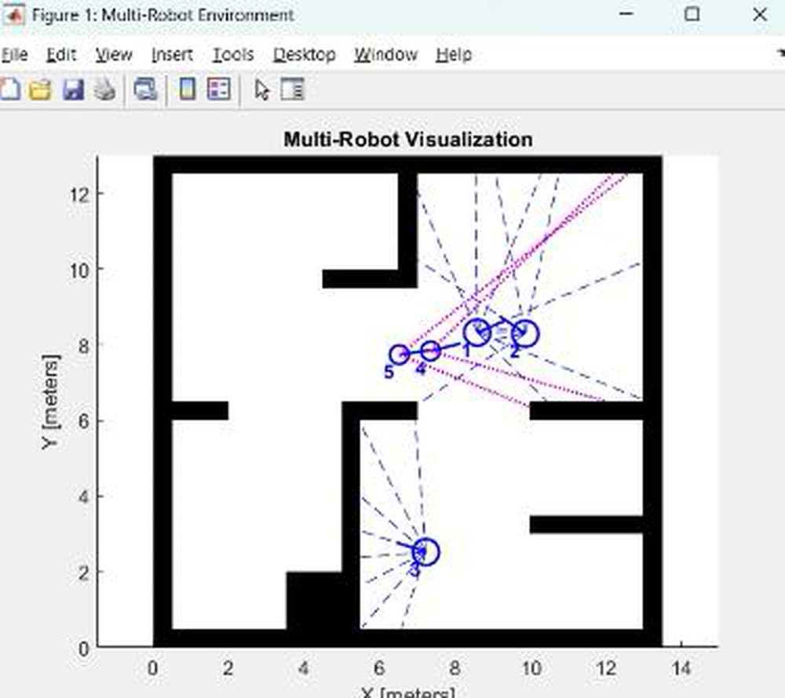
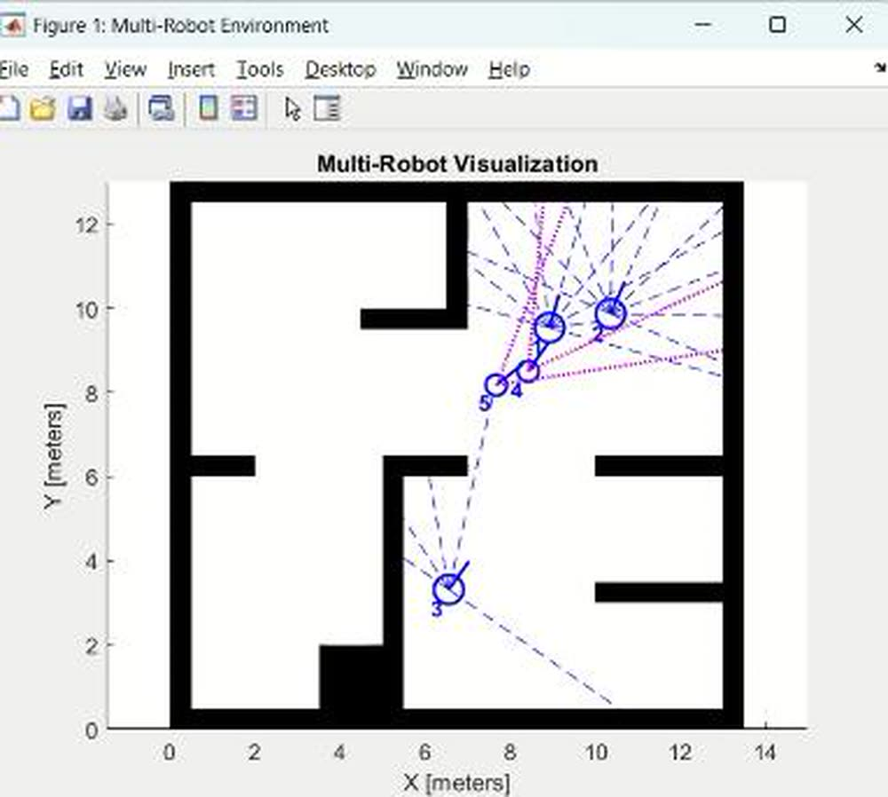
Fifty agents, no leader, no map, one group.
The grouping model scales the same primitives to 50 point-mass robots, each with LiDAR, IMU, and a 90° field of view, sharing the parameters of the tracking model so the layers stay consistent. Every robot carries an ID, is assigned to a team, and moves according to the average position and orientation of the teammates it can currently see — an averaging law, not a global optimization, with nothing broadcast and no shared map.
θ̄ = (1/N) Σ θi, r̄ = (1/N) Σ ri // averaged over visible teammates only
x(t+Δt) = x(t) + v·Δt·cos θ, y(t+Δt) = y(t) + v·Δt·sin θ, θ(t+Δt) = θ(t) + ω·Δt
Attraction and repulsion are opposing potential fields — one pulls the group together, the other keeps members from colliding — and the equilibrium between them is the formation. Nobody computes the formation; it's what's left when the two forces balance.
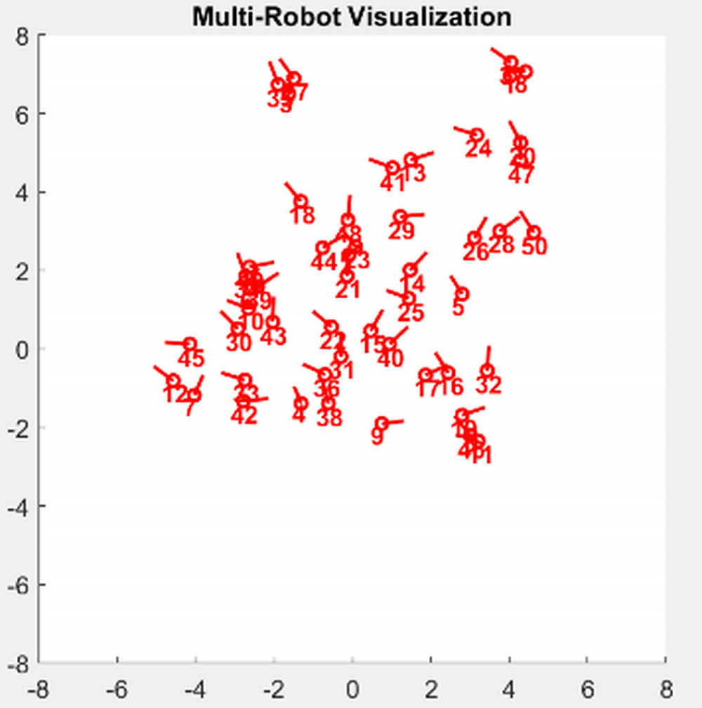
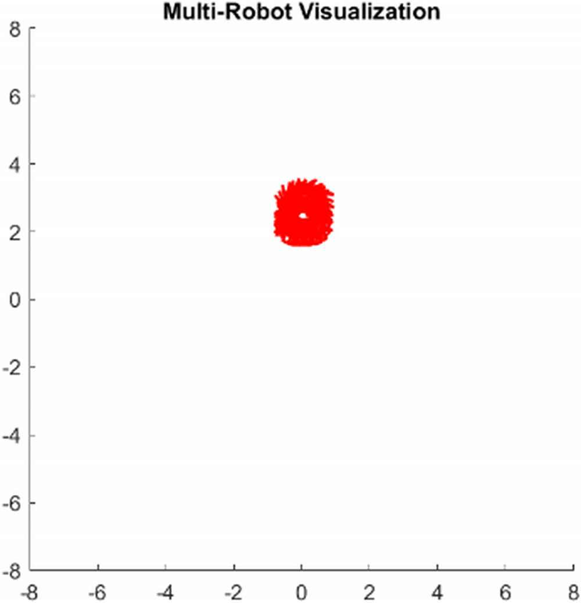
The same controller produces multiple simultaneous groups by changing team assignment alone — three teams starting interleaved sort themselves into three separate clusters without any change to the control law. That's the useful property for a real survey fleet, where sub-teams need to cover different areas and regroup later.
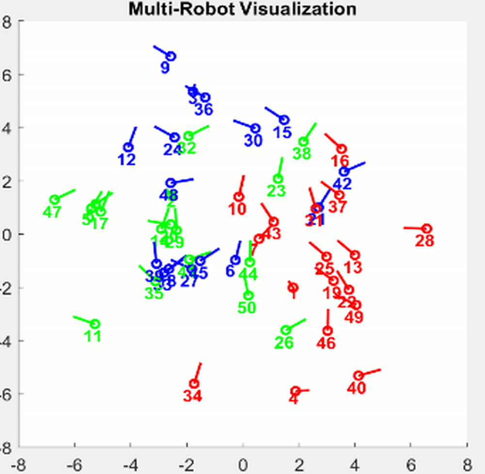
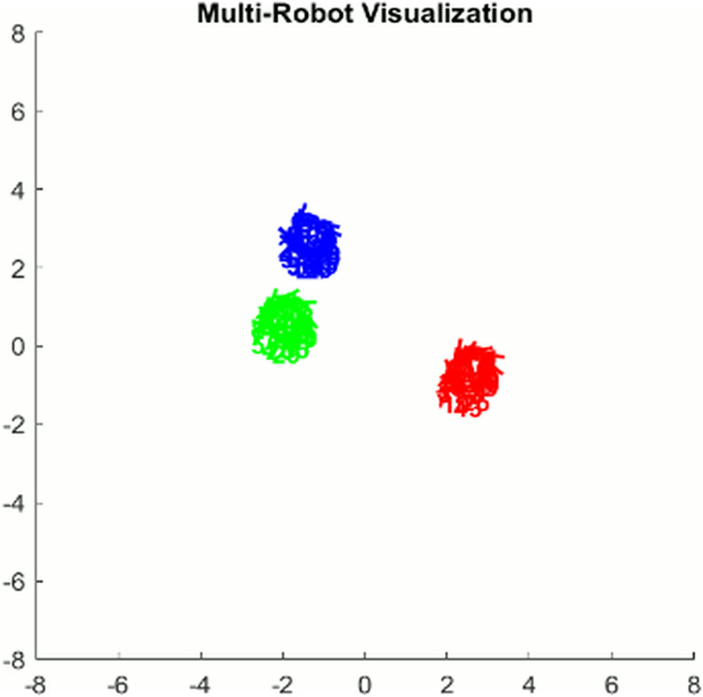
The trajectory plots are where convergence stops being visual and becomes measurable. In the x–y view every path spirals inward to a common region; in position-versus-time the fifty traces fan out early and then collapse into a stable band and stay there — the signature the theoretical analysis predicted.
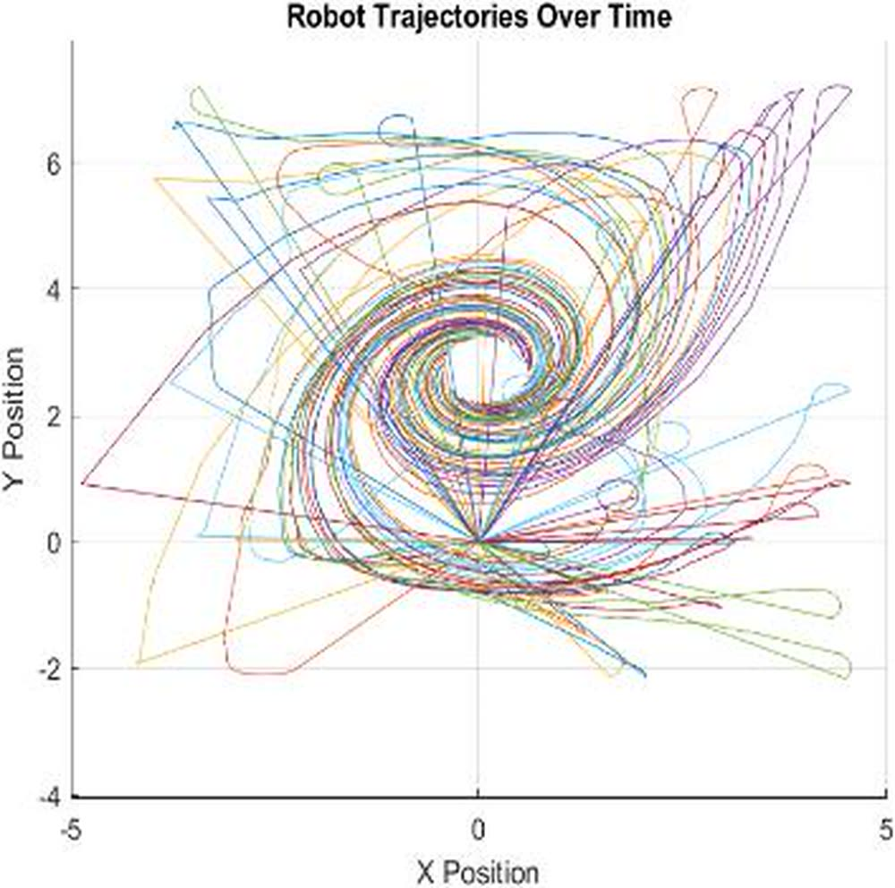
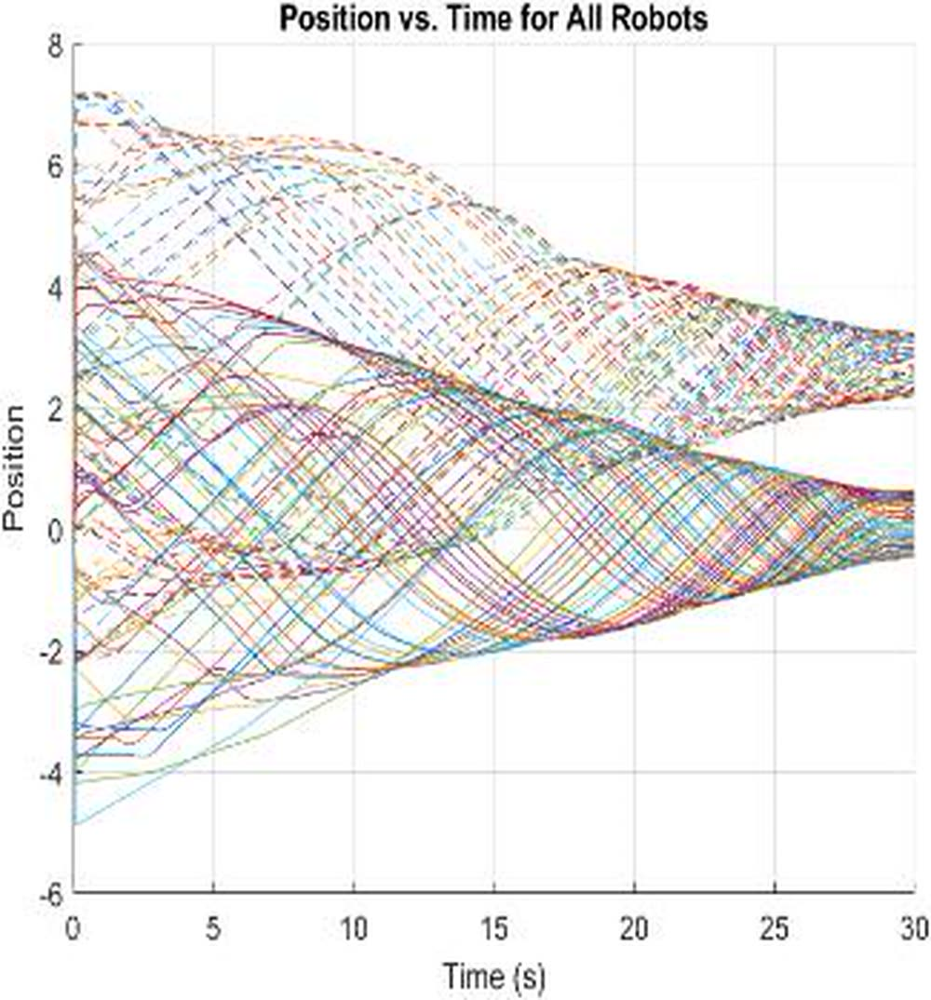
The models, running.
A recorded pass through the three simulation layers — the AUV Simulink model and its thruster dynamics, the object tracking and avoidance behavior, and the grouping model converging.
Air is a cheap ocean.
Testing AUV hardware requires water, weeks, and money. The workaround: build the vehicle as a blimp and swap the density of water for the density of air. The buoyancy-dominated, drag-heavy, slow-inertia regime is close enough that the same dynamics model transfers with a fluid-property change — and a blimp can be flown in a corridor.
The build flew and held a steady level autonomously with three motors instead of five, but the full vehicle was not completed inside the course — the report is direct that hardware implementation remains open, alongside the unmodeled environmental effects on the follower robots. This platform thread continued afterward on a much more capable airframe: AeroFusion (Spring 2025) →
Team project — Prajjwal Dutta, Vivek Sunil Kulkarni, Niyati Abhijeet Vaidya (Arizona State University). Per the report, the theoretical analysis and mathematical modeling were led by Prajjwal and Niyati; the Simulink model construction and validation by Niyati and Vivek. All figures from the team's report, linked above.
What this project proves.
Global behavior doesn't require global information. Fifty agents converge with no map, no GPS, no broadcast — only range and bearing to whoever is inside a 90° cone. The group structure is emergent, and that's exactly why it survives losing communication. Capping detections is what makes it scale: each robot's cost depends on how many neighbors it can see, not how many exist, so 50 agents run the same controller as 4. And the model has to be honest where it matters — deriving motor transfer functions and hydrodynamic forces rather than assuming ideal thrust is what separates a flocking demo from a simulation of an actual vehicle. The report's own honesty about what was skipped — environmental forces on the followers — is part of the same discipline.